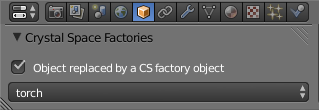

| [ < ] | [ > ] | [ << ] | [ Up ] | [ >> ] | [Top] | [Contents] | [Index] | [ ? ] |
If a Blender mesh object has neither an armature nor any shape keys, then it will be exported as a Genmesh Mesh Object. In other cases, it will be exported as an animated mesh.
The data of the mesh that are exported are
All this data is put in the corresponding library file in the ‘factories’ directory.
Instanced meshes can be defined using the ‘Crystal Mesh Group’ panel in the ‘Object’ context of the ‘Properties’ window.
It is possible to export a mesh as double sided, e.g. if you have a flat object
that you would like to see from both sides. In this case, the
io_scene_cs add-on will duplicate all faces, vertices, normals, etc of
the mesh, implying much more memory and display costs. Therefore, you have to
be sure to use this option only if you need it.
The Blender ‘Double Sided’ option is found in the ‘Object Data’ context of the ‘Properties’ window:
By default, this option is enabled for all new meshes that are created. Since
this behavior is not friendly with the expectations of the io_scene_cs
script, a global setting has been added in the main export panel, allowing to enable or not the use of the ‘Double Sided’
option. If you don't uncheck this last setting, then all meshes are exported
as single sided.
There are basically two ways to create a 'smooth' mesh. The first way is using the window above and enabling ‘Auto Smooth’ in the ‘Object Data’ context of the ‘Properties’ window. This will cause the export of the Crystal Space ‘autonormals’ flag so Crystal Space will itself generate the normals when the mesh is loaded.
The second way is going to edit mode and then selecting ‘Smooth’ in the ‘Shading’ section of the ‘Mesh Tools’ window. If you select this option then Blender itself will generate the normals and these normals are then also exported to Crystal Space.
The Blender object modifiers that can be defined in the ‘Object Modifiers’
context of the ‘Properties’ window are supported by the io_scene_cs
add-on for static meshes. They will be automatically applied to Genmeshes
before the export.
One particular case can alter this default behaviour: static meshes having only ‘Array’ modifiers with ‘Fixed Count’ copies. For such objects, an additional panel called ‘Crystal Space Modifier’ allows the activation of option ‘Export arrays as mesh factory instances’. If this option is activated, only the raw object is actually exported as mesh factory while each array copy of the object is exported as an instance of the factory in ‘world’ file, allowing to spare memory space.
If you want to include Crystal Space factories or materials to your exported Blender scenes, use the ‘Crystal Space Factory References’ and ‘Crystal Space Material References’ panels. They are placed in the ‘Render’ context of the ‘Properties’ window:

These panels allow you to add references to existing Crystal Space factories and materials. To do so, you must enter the name of your factory or material and the VFS path of library file containing its definition.


Warning: Note that if this property is checked, the original Blender object will not be exported.

Warning: Note that if this property is checked, the original Blender material will not be exported.
| [ < ] | [ > ] | [ << ] | [ Up ] | [ >> ] | [Top] | [Contents] | [Index] | [ ? ] |
This document was generated using texi2html 1.76.